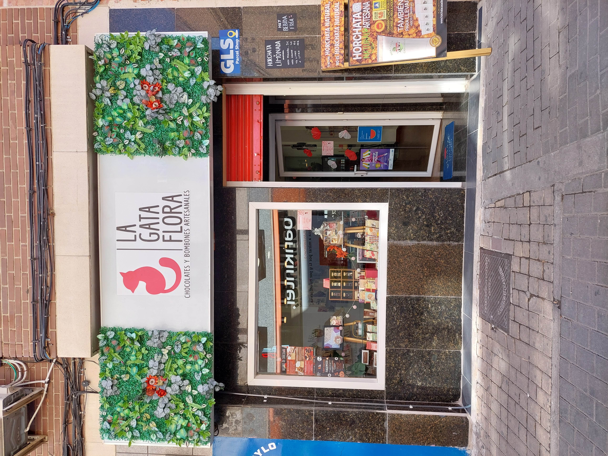

AFA CEIP Enrique Tierno Galván de Getafe
La Gata Flora
Chocolatería artesanal

Tienda de chocolates y bombones artesanales en Getafe: productos del cacao elaborados en obradores de todo el país y un espacio para talleres que acercan el mundo del chocolate al municipio.
🍫 Ventajas para socios del AFA
Los socios del AFA CEIP Enrique Tierno Galván de Getafe disfrutan de:
- 10% de descuento en todos los productos de la tienda, presentando la acreditación de socio
- Taller infantil estándar a 16 €/niño (precio habitual 18 €). No aplica a talleres especiales (Halloween, Navidad, etc.)
👩🍳 Talleres de chocolate
Actividades de unos 90–105 minutos para descubrir y crear con chocolate:
- Tableta + degustación (adultos, 30 €/persona)
- Creaciones de chocolate (adultos, 30 €/persona)
- El laboratorio de chocolate (infantil, 18 €/persona; socios del AFA: 16 € en el taller estándar)
Los talleres para adultos pueden adaptarse al grupo. Para cumpleaños, eventos cerrados o actividades en el colegio, contacta con la tienda.
📍 La Gata Flora
C. de la Cruz, 8 · Getafe (junto a la Plaza General Palacio)